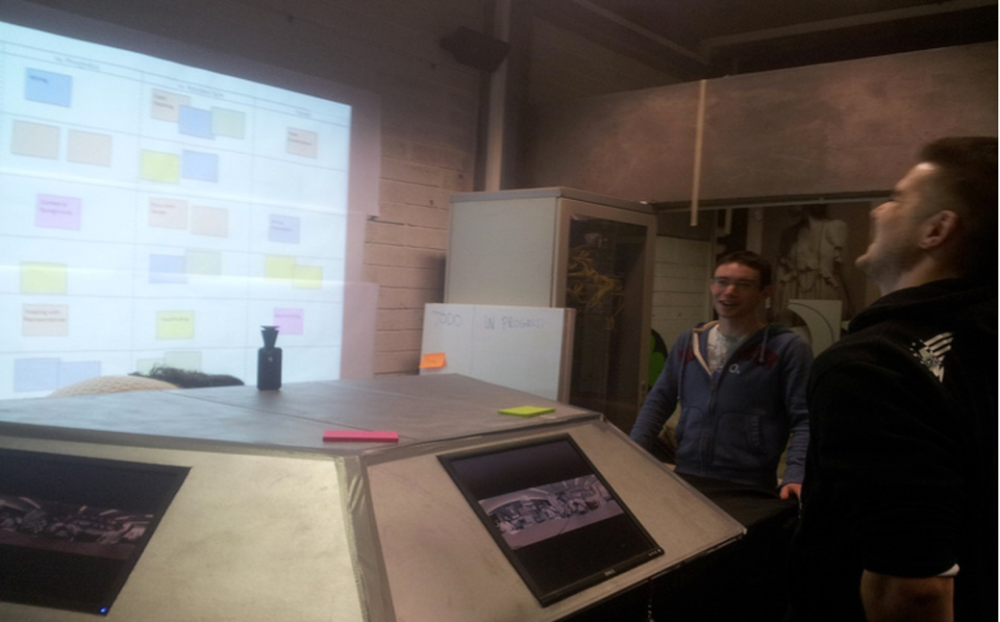

SAP Labs, Dublin
Remote
Remote
Collaboration
Scrum Station
Virtual Scrum Station is an interactive kiosk, which encourages and enables informal meetings between remotely located SCRUM teams in a large organization. This kiosk improves the experience communicating over video by providing a panoramic view of the remote location which allows the remote viewer to interact with large groups of people without the limited perspective of a webcam.
The final product went through a lot of iterations. The following snapshot shows the evolution of the scrum table.
Design School
Stanford University
Stanford University
This project helped me understand the nuances of industrial design. Having a software and electrical engineering background, I got to see the tangible side of product design.
Want to find out more?
Want to find out more?
GENRE
Collaboration
Product Design
User Experience
SKILLS
Product Design
Product Strategy
Software and Digital Design